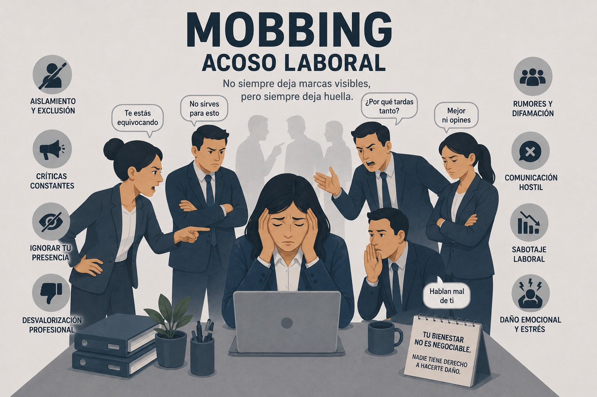

Riesgo psicosocial
Mobbing o acoso laboral
Conductas persistentes de hostigamiento, intimidación o degradación que afectan la dignidad y la salud de la persona trabajadora.

Definición
El acoso laboral se define como toda conducta persistente y demostrable ejercida sobre un trabajador por un superior, compañero o subalterno, con el fin de infundir miedo, intimidación, terror o angustia, causar perjuicio laboral, desmotivación o inducir a la renuncia (Ecopetrol, 2022).
El acoso laboral o "mobbing" comprende cualquier conducta abusiva, palabra o acto que atente contra la dignidad y la integridad física o psíquica de una persona, poniendo en peligro su empleo o degradando el clima de trabajo (Superintendencia del Subsidio Familiar, 2020).
Estas conductas se presentan mediante comportamientos de violencia psicológica ejercidos de forma sistemática y durante un tiempo prolongado sobre otra persona en el lugar de trabajo (Organización Iberoamericana de Seguridad Social [OISS], 2023).
Características
- El mobbing o acoso laboral es una de las formas más encubiertas de malestar en el ámbito profesional, ya que las dinámicas que lo generan se suelen menospreciar o considerar normales (Margiotta, 2026).
- La conducta debe ser, por regla general, repetida y pública, aunque excepcionalmente un solo acto hostil puede ser calificado como acoso si es lo suficientemente grave como para ofender la dignidad humana o los derechos fundamentales (Ecopetrol, 2022).
- En Colombia, tras un interés creciente a inicios de los años 2000, se promulgó la Ley 1010 de 2006, conocida como la Ley de Acoso Laboral, para reconocer plenamente este fenómeno y otorgar garantías de convivencia (Universidad del Norte, s. f.).
- La Ley 1010 protege bienes jurídicos como el trabajo digno, la intimidad, la honra, la salud mental, la libertad y el trabajo digno (Alcaldía Mayor de Bogotá, 2018).
Causas
Entre las conductas que originan el acoso laboral se encuentran (Ministerio de Educación Pública, 2021):
- Realizar un cambio de espacio físico intencionado y no justificado hacia una sola persona en detrimento de las condiciones de trabajo.
- Limitar el acceso a información, herramientas y materiales necesarios para llevar a cabo la labor.
- Propiciar acciones que induzcan al error en el desempeño de la tarea de la persona trabajadora.
- Asignación sistemática de tareas sin contenido, inútiles y diferentes al puesto, con el objetivo de perjudicar a la persona trabajadora.
- Distribución inequitativa de cargas (altas, bajas o ninguna) con la intención de perjudicar a la persona trabajadora.
- Hacer constantes amenazas de despido, traslado o sanciones.
- Realizar múltiples y reiteradas denuncias disciplinarias sin evidencia de error.
- Ignorar, mofarse, descalificar ideas o propuestas en diferentes ámbitos vinculados a la persona trabajadora.
- Reaccionar de manera reiterativa, desproporcionada o humillar a la persona trabajadora por cometer un error u omisión.
- Tomar acciones contra la persona trabajadora que realiza alguna denuncia o demanda por acoso laboral.
- Propiciar el aislamiento social, restringiendo el contacto y la participación.
- Limitar la comunicación de la persona trabajadora para el desempeño de sus labores.
- Invisibilizar o ignorar a la persona trabajadora.
- Excluir de actividades propias del trabajo como reuniones, correos electrónicos e instrucciones, entre otros.
- Excluir o no consultar sobre el interés de participar en actividades sociales durante la jornada laboral.
- Realizar, fomentar, difundir y usar expresiones de burla, comentarios denigrantes, rumores o calumnias, en relación a la vida personal o laboral de la persona trabajadora.
- Golpear o dañar instrumentos, herramientas, equipos, mobiliario e infraestructura de trabajo asignada a la persona trabajadora.
- Enviar mensajes, llamadas telefónicas y mensajes virtuales con contenido injurioso, ofensivo o intimidatorio hacia la persona trabajadora y su familia, claramente identificable de quien lo hace.
- Empujar, golpear objetos, tirar puertas, amenazar, gritar o cualquier otro acto violento hacia la persona trabajadora.
Consecuencias
El impacto del mobbing puede ser devastador y crónico (Margiotta, 2026):
- Físicas: Dolores de cabeza, trastornos gastrointestinales, insomnio y agotamiento crónico.
- Psicológicas: Ansiedad, ataques de pánico, depresión, pérdida de confianza y Trastorno de Estrés Postraumático (TEPT).
- A largo plazo: Aumento significativo del riesgo de patologías cardiovasculares y aislamiento social.
- Psicológicas: Ansiedad, ataques de pánico, depresión, pérdida de confianza y Trastorno de Estrés Postraumático (TEPT).
- A largo plazo: Aumento significativo del riesgo de patologías cardiovasculares y aislamiento social.
Señales y manifestaciones comunes
El acoso suele ser encubierto y manifestarse a través de:
- Aislamiento social: Exclusión de reuniones o conversaciones grupales.
- Descalificación: Críticas constantes, burlas públicas y ataques a la autoestima profesional.
- Degradación de tareas: Asignación de trabajos sin sentido o muy por debajo de la cualificación de la persona.
- Obstaculización: Ocultar información necesaria o dificultar el acceso a recursos.
- Amenazas: Insinuaciones sobre la pérdida del empleo.
Conductas de acoso vs. conductas legítimas
Se distingue entre las conductas que constituyen acoso laboral y las actividades legítimas de la relación laboral, siempre que estas últimas sean justificadas y objetivas:
| Modalidades de acoso laboral | NO constituyen acoso laboral |
|---|---|
| Maltrato laboral: actos de violencia física o sexual, expresiones injuriosas o ultrajantes que lesionen la integridad moral o la autoestima (Ecopetrol, 2022). | Exigencias técnicas, de calidad o cumplimiento de metas: evaluaciones de desempeño (Ecopetrol, 2022). |
| Persecución laboral: conductas arbitrarias que buscan inducir la renuncia, como cargas excesivas de trabajo y cambios permanentes de horario (Ecopetrol, 2022). | Potestad disciplinaria: llamados de atención por incumplimiento de horario (Ecopetrol, 2022). |
| Discriminación laboral: trato diferenciado por razones de raza, género, edad, religión, preferencia política o situación social (Ecopetrol, 2022). | Colaboración extra en emergencias: solicitud de apoyo adicional en casos de emergencia u operación urgente (Universidad del Norte, s. f.). |
| Entorpecimiento laboral: acciones que obstaculizan la labor, como ocultar insumos, documentos o destruir información (Ecopetrol, 2022). | Terminación del contrato por causa legal o justa: Ecopetrol, 2022. |
| Inequidad laboral: asignación de funciones a menosprecio de la persona, p. ej. tareas de oficios varios a un técnico especialista (Universidad del Norte, s. f.). | Cumplimiento de deberes y reglamentos: deberes ciudadanos, obligaciones del trabajador o uso de uniformes (Ecopetrol, 2022). |
| Desprotección laboral: órdenes o funciones asignadas sin los requisitos mínimos de protección y seguridad (Ecopetrol, 2022). | Fidelidad laboral razonable: solicitudes técnicas para mejorar la eficiencia, evaluaciones de desempeño, cumplimiento de reglamentos internos o llamados de atención respetuosos (Positiva Compañía de Seguros, 2022). |
Atención y protección frente al acoso laboral
Ante una situación de acoso laboral, la primera instancia es el Comité de Convivencia Laboral (CCL), encargado de prevenir y solucionar estas situaciones con el propósito de preservar la armonía en el entorno de trabajo (Ecopetrol, 2022). El comité cuenta con las siguientes características:
- Naturaleza conciliatoria: su función no es sancionatoria, sino que busca la "recuperación del tejido convivente" mediante acuerdos entre las partes.
- Confidencialidad: sus miembros deben guardar reserva absoluta sobre la información conocida para generar confianza.
- Composición: está integrado por dos representantes de los trabajadores (electos por voto) y dos representantes designados por la empresa (Ecopetrol, 2022).
Una vez presentada la queja, el comité dispone de quince días hábiles para analizar las pruebas y promover espacios de diálogo orientados a establecer compromisos y fortalecer la convivencia laboral (Superintendencia del Subsidio Familiar, 2020).
Para el desarrollo del caso, el comité puede realizar entrevistas con la víctima, la persona señalada y los posibles testigos, con el fin de documentar adecuadamente la situación (Alcaldía Mayor de Bogotá, 2018).
Cuando no se logra una conciliación o los acuerdos no se cumplen, la persona afectada puede acudir al Ministerio del Trabajo, la Procuraduría General de la Nación, el Inspector de Trabajo, la Personería o la Defensoría del Pueblo, según corresponda (Positiva Compañía de Seguros, 2022).
Protección a las víctimas
Las víctimas tienen derecho a la reserva de identidad, a recibir orientación jurídica y a atención psicológica o psiquiátrica integral. La ley también establece protección contra represalias. Si una persona que ha presentado una queja por acoso laboral es despedida dentro de los seis meses siguientes, dicho despido carece de efecto, siempre que las autoridades competentes verifiquen los hechos denunciados (Alcaldía Mayor de Bogotá, 2018).
Mecanismos de prevención organizacional
La prevención del acoso laboral requiere la implementación de medidas orientadas a garantizar un ambiente de trabajo digno, justo y armónico. Para ello, las organizaciones deben promover una política institucional basada en el buen trato (Procuraduría General de la Nación, 2023).
Política y cultura de prevención
Como parte de las acciones preventivas, las organizaciones deben elaborar una normativa para la prevención y atención del acoso laboral, preferiblemente con la participación de la población trabajadora. Esta debe incluir una declaración de cero tolerancia a la violencia en el trabajo y un Código de Conducta que identifique los comportamientos no aceptados y las responsabilidades para implementar la normativa (Ministerio de Educación Pública, 2021).
Asimismo, se promueve la divulgación de buenas prácticas, las estrategias para fomentar la sana convivencia laboral y la socialización de protocolos y rutas de actuación para la prevención, atención y seguimiento de los casos (Procuraduría General de la Nación, 2023).
Gestión del riesgo psicosocial
La prevención también comprende la identificación y evaluación de los factores de riesgo laboral psicosociales relacionados con la organización del trabajo y la presencia de violencia en el entorno laboral. A partir de ello, deben desarrollarse medidas orientadas a eliminar o mitigar dichos factores, así como establecer procedimientos de manejo de conflictos laborales para prevenir conductas de violencia en el trabajo (Ministerio de Educación Pública, 2021).
Sensibilización y capacitación
Las organizaciones deben desarrollar actividades de sensibilización y capacitación dirigidas a las personas trabajadoras, especialmente a los mandos medios, jefaturas y niveles directivos. Estas acciones buscan fortalecer las competencias interpersonales, promover la armonía laboral y prevenir el acoso laboral, la discriminación, los conflictos y las prácticas laborales abusivas (Procuraduría General de la Nación, 2023).
Papel del Comité de Convivencia Laboral
El Comité de Convivencia Laboral constituye una medida preventiva fundamental. Antes de cualquier proceso disciplinario o sancionatorio, debe agotarse un procedimiento preventivo y conciliador ante este comité. Además, tiene la función de desarrollar mecanismos de mediación, formular recomendaciones a la administración y realizar seguimiento a las estrategias orientadas a controlar el riesgo de acoso laboral y fortalecer las relaciones basadas en el respeto (Procuraduría General de la Nación, 2023).
Material de apoyo
Ejemplo 1:
Mirar video en YouTube (yL-hXDy6vSE)Ejemplo 2:
Mirar video en YouTube (oDQDiVwSJA8)Casos reales:
Mirar video en YouTube (hwbTE3doXtQ)Referencias bibliográficas
Alcaldía Mayor de Bogotá. (2018, octubre). Acoso laboral & sexual laboral: Protocolo de prevención y atención [Folleto]. Secretaría General; Secretaría Distrital de la Mujer. https://www.sdmujer.gov.co/sites/default/files/2021-11/documentos/Protocolo%20de%20prevenci%C3%B3n%20y%20atenci%C3%B3n%20de%20acoso%20laboral%20y%20sexual%20laboral.pdf
Canal Institucional. (2024, 18 de septiembre). ¿Cómo denunciar el acoso laboral en Colombia? [Video]. YouTube. https://www.youtube.com/watch?v=hwbTE3doXtQ
Corte Suprema de Justicia de Colombia. (2022, 17 de noviembre). El acoso laboral que desencadenó una enfermedad mental [Video]. YouTube. https://www.youtube.com/watch?v=yL-hXDy6vSE
Ecopetrol. (2022). Prevengamos el acoso laboral en Ecopetrol [Folleto]. Gerencia de Comunicaciones Corporativas. https://saaeuecpprdpecp.blob.core.windows.net/web/esp/cargas/cartilla-acoso-laboral%20Actualizada.pdf
Margiotta, M. (2026, 27 de marzo). Mobbing o acoso laboral: cómo reconocerlo y afrontarlo. Unobravo. https://www.unobravo.com/es/blog/mobbing-acoso-laboral
Ministerio de Educación Pública. (2021). Guía técnica para la prevención y atención del acoso laboral o “mobbing” en el lugar de trabajo. https://www.mep.go.cr/sites/default/files/2023-04/guia-prevencion-atencion-acoso-laboral.pdf
Ministerio del Trabajo de Colombia. (2023, 23 de mayo). ¿Eres víctima de acoso laboral? [Video]. YouTube. https://www.youtube.com/watch?v=oDQDiVwSJA8
OpenAI. (2026). Imagen conceptual sobre Mobbing y acoso laboral con subtítulo "No siempre deja marcas visibles, pero siempre deja huella" y listado de conductas de hostigamiento [Imagen generada por IA]. ChatGPT. https://chatgpt.com
Positiva Compañía de Seguros. (2022). Lo que debo saber sobre acoso laboral y acoso sexual laboral en mi entorno de trabajo [Folleto]. https://posipedia.com.co/wp-content/uploads/2022/10/CARTILLA-ACOSO-LABORAL-TRABAJADORES-1.pdf
Procuraduría General de la Nación. (2023, septiembre). Protocolo para la prevención, atención y seguimiento del acoso laboral en la Procuraduría General de la Nación. https://www.procuraduria.gov.co/Documents/septiembre%202023/Protocolo%20para%20la%20prevenci%C3%B3n,%20atenci%C3%B3n%20y%20seguimiento%20del%20acoso%20laboral%20en%20la%20Procuradur%C3%ADa%20General%20de%20la%20Naci%C3%B3n.pdf
Superintendencia del Subsidio Familiar. (2020, diciembre). Cartilla para prevenir el acoso laboral y sexual [Folleto]. Grupo de Gestión del Talento Humano. https://www.ssf.gov.co/documents/20127/723389/CARTILLA+PARA+PREVENIR+EL+ACOSO+LABORAL+Y+SEXUAL+rev+12232020.pdf/50f06d53-eb4b-f2b9-77b4-a571303b8d43
Universidad del Norte. (s. f.). Cartilla acoso laboral [Folleto]. Unidad de Prácticas Jurídico - Políticas y Servicios a la Comunidad. https://www.uninorte.edu.co/documents/14439846/14609973/C-19642_AR_EXT_JUR_CUA_ACOSO_LABORAL_press.pdf